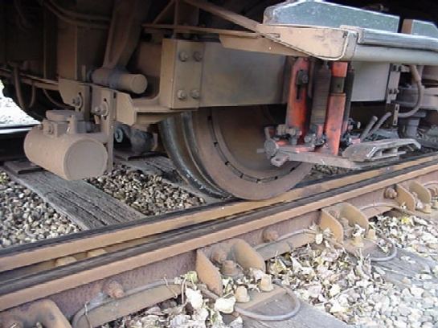

Automatische Treinbeïnvloeding (ATB)
- Laatst bijgewerkt op woensdag 31 oktober 2012 17:54
- zondag 07 december 2008 14:56
De Rotterdamse Metro is uitgerust met een ingenieus seinsysteem. Zo kent de Rotterdamse metro geen lichtsignalen langs de hoofdbaan, met uitzondering van het sneltramtracé. Op de emplacementen wordt gebruik gemaakt van een ATB-signaal en een dwergsein, omdat hier een lager beveiligingsniveau gehandhaafd wordt.
Automatische Treinbeinvloeding, wat is dat?
Automatische Treinbeinvloeding (ATB) is een systeem dat geen gebruik maakt van seinen langs de baan, maar van lichtsignalen in de cabine. Deze worden aangestuurd door ATB-zenders die een frequentie tussen de 370 en de 570 Herz via de sporen naar de trein in een 'sectie' sturen. Een sectie kan 60 tot 300 meter lang zijn. De secties worden bewaakt door een relaissysteem, dat waarneemt of een 'sectie' bezet of vrij is. Als er spoorbreuken zijn, treed ook een bezetmelding op. Soms treden er onterecht bezetmeldingen op. Dit wordt een 'valse bezetmelding' genoemd. De ATB-signalen in een sectie worden opgepikt door een ATB-spoel die aan het rijtuig is bevestigd.

Een ATB-spoel onder een metrorijtuig van het type M.
Lichtsignalen in de cabine
Onder ieder metrorijtuig hangen vier ontvangstspoelen, die de ontvangen frequentie omzetten naar een lichtsignaal in de cabine, een zogenaamd "rijbegrip". De frequentie wordt in de spoorstaven geïnjecteerd door ATB-zenders en spoortrafo's. Het rijbegrip is een maximale toegestane snelheid, waar de metrobestuurder zich aan dient te houden. Doet de bestuurder dat niet, dan kan de metrotrein zelf ingrijpen en de metro afremmen naar de maximale toegestane snelheid.
De ATB kan op geen enkele wijze door de metrobestuurder uitgeschakeld of overbrugd worden. Een metro rijdt niet zonder ATB, de ATB is immers een rijvoorwaarde. Geen ATB betekent niet rijden. Wel kan de afdeling Signalering & Telecommunicatie (S&T) de ATB in het metrorijtuig overbruggen, bij bijvoorbeeld technische proeven of in noodgevallen.
De huidige Siemens-spoortrafo's, die over het gehele metronet liggen, met uitzondering van de trajectdelen Marconiplein - Tussenwater en de De Tochten - Nesselande.
Sneltram
Er staan alleen signaallampen langs het sneltramtraject, om de bestuurder van de metrosneltram te laten weten of de rest van de kruising 'rood' heeft en de kruising veilig genaderd kan worden. Er gaat dan een wit licht knipperen. Indien er een AHOB staat, gaat er een oranje lamp branden. De verkeerslicht-installatie is NIET gekoppeld aan het ATB-systeem. Het AHOB-systeem daarentegen is wel gekoppeld aan het ATB-systeem. Zodra een vertreksverbod wordt gesteld op een station, in de nabijheid van een gelijkvloerse kruising, zal de AHOB niet sluiten. Dit ter voorkoming dat een kruising voor niets dichtgaat, en het verkeer stil zal staan.
Rijbegrippen
Er zijn diverse rijbegrippen. In de nieuwste voertuigen verschijnt de toegestane snelheid in een display en een pijl op de snelheidsmeter die aangeeft wat de maximale snelheid is in de betreffende sectie. De maximale snelheid is afhankelijk van andere treinen in de buurt van de sectie, spoorbreuken, foutieve wisselstanden en ligging van de baan.
Vertreksverbod |
|
| 0 Permissief |
|
| 0 Absoluut actief |
|
| 0 Absoluut passief |
|
| 10 Absoluut |
|
| 20 Permissief |
|
| Groen 35 |
|
| Geel 50 |
|
| Groen 50 |
|
| Groen 60 |
|
| Groen 70 |
|
| Groen 80 |
|
Locomotieven en werkmaterieel
De oudere diesellocomotieven van het metrobedrijf zijn niet uitgerust met ATB. De locomotieven mogen daarom alleen de hoofdbaan op als dat echt nodig is. 's Nachts worden de locomotieven ook ingezet bij werkzaamheden. De Centrale Verkeersleiding begeleidt de werkwagens dan. Locomotief 6201 is wel voorzien van ATB.